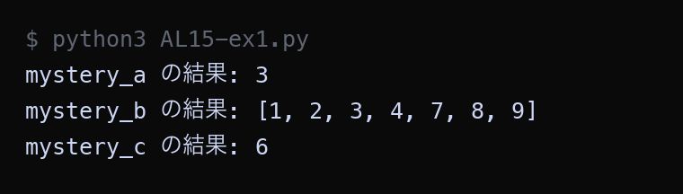
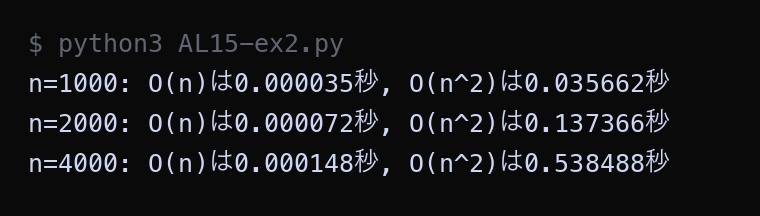
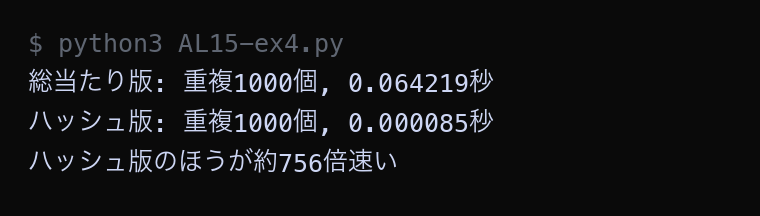
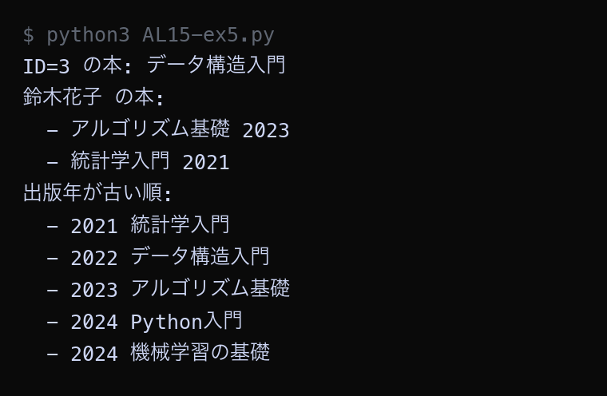

全14回の学習内容を振り返り、アルゴリズムの特徴・計算量・適用場面を体系的に整理する
| アルゴリズム | 計算量（平均） | 用途 | 学んだ回 |
|---|---|---|---|
| 逐次探索 | O(n) | 未整列データからの検索 | 第3回 |
| 二分探索 | O(log n) | ソート済みデータからの検索 | 第4回 |
| ハッシュ探索 | O(1) | キーから値を即座に取得 | 第6-7回 |
| 挿入ソート | O(n^2) | 小規模・ほぼ整列データのソート | 第8-9回 |
| バブルソート | O(n^2) | 教育目的・小規模データのソート | 第9回 |
| カウントソート | O(n+k) | 限定範囲の整数ソート | 第10-11回 |
| BFS（幅優先探索） | O(V+E) | 最短経路・迷路探索 | 第12-13回 |
| DFS（深さ優先探索） | O(V+E) | 全探索・連結判定 | 第12-13回 |
すべての例題で「🖐 やってみよう」に取り組んでください。コードがある例題（例題1・2・4・5）は、実際にファイルに保存して実行し、ページに載せた「▶ 実行結果」と同じ表示になるかを確かめます。まず作業フォルダを準備します。
Step 1: 作業フォルダを作る
Step 2: VS Code でフォルダを開く
→ 左側のエクスプローラーに「No15」フォルダの中身が表示されます（最初は空っぽ）。
Step 3: 新しいファイルを作る
AL15-ex1.py と入力して Enter例題ごとにファイルを分けましょう: AL15-ex1.py（例題1）, AL15-ex2.py（例題2）, AL15-ex4.py（例題4）, AL15-ex5.py（例題5）, AL15-std2.py（標準課題2）
| 用語 | 説明 |
|---|---|
| 計算量の比較 | Big O 記法でアルゴリズムの効率を比較する方法。O(1) < O(log n) < O(n) < O(n log n) < O(n^2) < O(2^n)。データが大きいほど差が顕著になる。 |
| アルゴリズムの選び方 | 問題の特性（データ量、ソート済みか、値の範囲など）に応じて最適なアルゴリズムを選ぶ。万能なアルゴリズムは存在しない。 |
| データ構造の選択 | リスト、セット、辞書など、用途に応じたデータ構造を選ぶことで性能が劇的に変わる。検索が多いならセットや辞書が有利。 |
コードの特徴的なパターンから、どのアルゴリズムかを判定します。
| キーワード | アルゴリズム |
|---|---|
left, right, mid（low, high, mid とも書く） | 二分探索 |
deque, popleft()（先に入れたものから取り出す） | BFS（幅優先探索） |
stack, pop()（後に入れたものから取り出す） | DFS（深さ優先探索） |
key = □□[i] と j = i - 1 があり、while で後ろへずらす | 挿入ソート |
隣どうし（□□[j] と □□[j+1]）を交換する | バブルソート |
数え上げ用の count リスト＋値の範囲 k | カウントソート |
dict（辞書）や set でキーから引く | ハッシュ探索 |
先頭から順に == target を1つずつ確かめるfor x in data: でも for i in range(len(data)): でも書ける | 逐次探索 |
では実際にやってみましょう。次の3つの関数は、わざと mystery_a のような意味のない名前にしてあります。中身のキーワードから、どのアルゴリズムかを当ててください。
Python ── AL15-ex1.py data = [3, 8, 1, 9, 4, 7, 2] target = 9 def mystery_a(data, target): for i in range(len(data)): if data[i] == target: return i # 見つかった場所（何番目か）を返す return -1 # 見つからなければ -1 を返す def mystery_b(data): result = data.copy() for i in range(1, len(result)): key = result[i] j = i - 1 while j >= 0 and result[j] > key: result[j + 1] = result[j] j -= 1 result[j + 1] = key return result def mystery_c(sorted_data, target): left, right = 0, len(sorted_data) - 1 while left <= right: mid = (left + right) // 2 if sorted_data[mid] == target: return mid elif sorted_data[mid] < target: left = mid + 1 else: right = mid - 1 return -1 # 見つからなければ -1 を返す print("mystery_a の結果:", mystery_a(data, target)) sorted_data = mystery_b(data) print("mystery_b の結果:", sorted_data) print("mystery_c の結果:", mystery_c(sorted_data, target))
▶ 実行結果

mystery_a と mystery_c はどちらも「9 を探す」処理ですが、返ってきた番号が違います（3 と 6）。これは mystery_b で並べ替えたあとのリストを mystery_c に渡しているためで、同じ 9 でも並べ替え前後で位置が変わるからです。
🖐 やってみよう（1分）
上のキーワード表を見ながら、mystery_a / mystery_b / mystery_c がそれぞれどのアルゴリズムかを当てよう。当ててから下のトグルを開いて答え合わせをしてください。
| 関数 | アルゴリズム | 計算量 | 根拠にできるキーワード |
|---|---|---|---|
mystery_a | 逐次探索 | O(n) | 先頭から1つずつ data[i] == target を確かめている |
mystery_b | 挿入ソート | O(n^2) | key = result[i] と j = i - 1 があり、while で後ろへずらしている |
mystery_c | 二分探索 | O(log n) | left / right / mid があり、探す範囲を半分にしている |
mystery_c は並べ替え済みのリストしか受け取れない点に注意。だからコードでは mystery_b の結果を渡しています。もとの data をそのまま渡すと、正しい答えが返りません。
コードのループ構造から計算量をO記法で求めます。
| パターン | 計算量 | コード例 |
|---|---|---|
| ループなし | O(1) | value = data[0] |
| 1重ループ | O(n) | for i in range(n): ... |
| 2重ループ | O(n^2) | for i in range(n): の中で for j in range(n): |
| 半分にする | O(log n) | while n > 1: n //= 2 |
表のとおりになるかを、実際に時間を測って確かめてみましょう。time.perf_counter() は「今の時刻」を秒で返す関数で、処理の前後で呼んで引き算すると、かかった時間が分かります。
Python ── AL15-ex2.py import time sizes = [1000, 2000, 4000] for n in sizes: data = list(range(n)) # O(n) の処理: リストを1回だけなぞる start = time.perf_counter() total = 0 for value in data: total += value time_n = time.perf_counter() - start # O(n^2) の処理: 2重ループ start = time.perf_counter() count = 0 for i in range(n): for j in range(n): count += 1 time_n2 = time.perf_counter() - start print(f"n={n}: O(n)は{time_n:.6f}秒, O(n^2)は{time_n2:.6f}秒") # nが2倍 → O(n)は約2倍、O(n^2)は約4倍になる
▶ 実行結果

n が2倍になるたびに、O(n) の時間は約2倍ずつ、O(n^2) の時間は約4倍ずつ増えています。同じ「n が2倍」でも増え方がまるで違うことに注目してください。なお秒数そのものはパソコンの性能で変わるので、自分の結果が上の画像と一致しなくても問題ありません。大事なのは増え方の倍率です。
🖐 やってみよう（1分）
コードを実行して、nが2倍になるとO(n)は約2倍、O(n^2)は約4倍になることを確認しよう。
| 問題 | 最適なアルゴリズム | 理由 |
|---|---|---|
| 1000人のソート済み名簿から名前を探す | 二分探索 O(log n) | 最大10回の比較で見つかる |
| ユーザーIDから情報を即座に取得する | ハッシュ探索 O(1) | キー→値はハッシュが最速 |
| 10万人の点数(0-100)をソートする | カウントソート O(n+k) | 整数+範囲限定で最速 |
| 迷路の最短経路を求める | BFS O(V+E) | 1歩ずつ均等に広がるので最短を保証できる |
🖐 やってみよう（1分）
「SNSで友達の友達を探す」にはどのアルゴリズムが最適か、上の表を参考に自分で考えてみよう。
「リスト内の重複要素を見つける」問題を2通りで解き、性能を比較します。
Python ── AL15-ex4.py import time def find_duplicates_bruteforce(data): """総当たり版 O(n^2)""" duplicates = [] for i in range(len(data)): for j in range(i + 1, len(data)): if data[i] == data[j] and data[i] not in duplicates: duplicates.append(data[i]) return duplicates def find_duplicates_hashset(data): """ハッシュセット版 O(n)""" seen = set() duplicates = set() for item in data: if item in seen: duplicates.add(item) else: seen.add(item) return list(duplicates) # --- 2つの方法の速度を比べる --- data = list(range(2000)) + list(range(1000)) # 0〜999 が2回ずつ出てくる start = time.perf_counter() result_bf = find_duplicates_bruteforce(data) time_bf = time.perf_counter() - start start = time.perf_counter() result_hs = find_duplicates_hashset(data) time_hs = time.perf_counter() - start print(f"総当たり版: 重複{len(result_bf)}個, {time_bf:.6f}秒") print(f"ハッシュ版: 重複{len(result_hs)}個, {time_hs:.6f}秒") print(f"ハッシュ版のほうが約{time_bf / time_hs:.0f}倍速い")
▶ 実行結果

どちらも「重複1000個」という同じ答えにたどり着いていますが、かかった時間は数百倍違います。答えが同じでも、アルゴリズム次第で速さがまったく変わるということです。倍率はパソコンの性能で変わるので、自分の結果と一致しなくても構いません。
| データ数 | 総当たり O(n^2) | ハッシュ O(n) | 速度比 |
|---|---|---|---|
| 500 | 0.023秒 | 0.000042秒 | 548倍 |
| 1,000 | 0.089秒 | 0.000081秒 | 1,099倍 |
| 2,000 | 0.356秒 | 0.000163秒 | 2,184倍 |
| 5,000 | 2.234秒 | 0.000412秒 | 5,422倍 |
秒数はパソコンの性能で変わります（自分の環境ではもっと速いこともあります）。注目するのは絶対的な秒数ではなく、データ数が増えたときの伸び方と速度比です。
🖐 やってみよう（1分）
コードを実行し、どちらも重複1000個を見つけるのに、かかる時間が大きく違うことを確認しよう。余裕があれば range(2000) と range(1000) をそれぞれ2倍（4000 と 2000）にして、総当たり版だけ時間が3〜4倍に増えること（O(n^2) なので理論上は4倍）も確かめよう。
「図書館の蔵書検索システム」を設計・実装する例です。
| 機能 | 使うアルゴリズム | 計算量 | 理由 |
|---|---|---|---|
| ID検索 | ハッシュ探索（辞書） | O(1) | キーから値を即座に取得 |
| 著者検索 | ハッシュ探索（辞書） | O(1) | 著者名→書籍リストの対応 |
| 出版年順一覧 | 挿入ソート | O(n^2) | 蔵書数が少なければ十分 |
インデックスとは「探しやすくするために先に作っておく索引」のことです。ここでは辞書（ハッシュテーブル）で索引を作り、あとから O(1) で引けるようにします。
Python ── AL15-ex5.py books = [ {"id": 1, "title": "Python入門", "author": "田中太郎", "year": 2024}, {"id": 2, "title": "アルゴリズム基礎", "author": "鈴木花子", "year": 2023}, {"id": 3, "title": "データ構造入門", "author": "田中太郎", "year": 2022}, {"id": 4, "title": "機械学習の基礎", "author": "佐藤次郎", "year": 2024}, {"id": 5, "title": "統計学入門", "author": "鈴木花子", "year": 2021}, ] # ID から本を引くための辞書（ハッシュテーブル）を作る id_index = {} for book in books: id_index[book["id"]] = book # キー: ID → 値: 本 # 著者名から本のリストを引くための辞書を作る author_index = {} for book in books: author = book["author"] if author not in author_index: author_index[author] = [] # その著者の入れ物を用意 author_index[author].append(book) # --- 検索してみる（どちらも O(1) で見つかる）--- print("ID=3 の本:", id_index[3]["title"]) print("鈴木花子 の本:") for book in author_index["鈴木花子"]: print(" -", book["title"], book["year"]) # --- 出版年が古い順に並べる（挿入ソート）--- sorted_books = books.copy() # 元の books を壊さないようにコピーしてから並べ替える for i in range(1, len(sorted_books)): key_book = sorted_books[i] j = i - 1 while j >= 0 and sorted_books[j]["year"] > key_book["year"]: sorted_books[j + 1] = sorted_books[j] j -= 1 sorted_books[j + 1] = key_book print("出版年が古い順:") for book in sorted_books: print(" -", book["year"], book["title"])
▶ 実行結果

ID=3 も「鈴木花子」も、リストを1件ずつ調べることなく辞書から直接取り出せています（O(1)）。いちばん下の一覧は、そのあと挿入ソートで出版年順に並べ替えた結果です。
🖐 やってみよう（1分）
まず実行して出力を確認しよう。次に books に6冊目（"id": 6、著者は "鈴木花子"）を追加して保存・実行し、ID検索で引けることと、著者検索の結果が2冊から3冊に増えることを確かめよう。
ヒント: 出版年が同じ2024年の2冊は、元のリストの順番（Python入門 → 機械学習の基礎）のまま並びます。これが第11回で学んだ安定ソートの性質です。
| アルゴリズム | 最良 | 平均 | 最悪 | 空間 | 安定 | 特徴 |
|---|---|---|---|---|---|---|
| 挿入ソート | O(n) | O(n^2) | O(n^2) | O(1) | 安定 | ほぼ整列時に高速 |
| バブルソート | O(n) | O(n^2) | O(n^2) | O(1) | 安定 | 教育目的向き |
| 選択ソート | O(n^2) | O(n^2) | O(n^2) | O(1) | 不安定 | 常に同じ速度 |
| カウントソート | O(n+k) | O(n+k) | O(n+k) | O(n+k) | 安定 | 整数限定、範囲が重要 |
| 基数ソート | O(d(n+k)) | O(d(n+k)) | O(d(n+k)) | O(n+k) | 安定 | 桁数が少ないとき高速 |
| Timsort | O(n) | O(n log n) | O(n log n) | O(n) | 安定 | Python標準 sorted() |
この授業で学んだ 逐次探索から DFS までの8つのアルゴリズムについて、どんな場面で使うのがよいかを自分の言葉で説明しなさい。
説明する8つのアルゴリズム
① 逐次探索 ／ ② 二分探索 ／ ③ ハッシュ探索 ／ ④ 挿入ソート ／ ⑤ バブルソート ／ ⑥ カウントソート（分布数えソート） ／ ⑦ BFS（幅優先探索） ／ ⑧ DFS（深さ優先探索）
それぞれについて、次の3点をすべて書くこと。
| 書くこと | 内容 |
|---|---|
| (a) 使う場面 | 「〜のようなときに使うとよい」を具体例を1つ挙げて書く。授業で出てきた例（迷路・名簿・図書館など）以外の、身の回りの例だとなおよい。 |
| (b) なぜよいか | その場面でなぜ有効なのかを、計算量やアルゴリズムの性質に触れて説明する。（例:「データ量が2倍になっても比較回数が1回しか増えないから」） |
| (c) 使わない方がよい場面 | 逆に、そのアルゴリズムが不向きな場面を1つ挙げ、その理由も書く。 |
記述例（二分探索の場合）
(a) 使う場面: 辞書アプリで「あいうえお順に並んだ単語リスト」から単語を引くとき。
(b) なぜよいか: 毎回まん中を見て探す範囲を半分に減らせるので、10万語あっても17回くらいの比較で見つかる。計算量は O(log n) で、データが増えても比較回数がほとんど増えない。
(c) 不向きな場面: 投稿が新着順にバラバラに並んだSNSのタイムラインから特定の投稿を探すとき。並んでいないと「まん中より前か後ろか」が判断できず、そもそも二分探索が使えない。
迷ったら: このページ上部の「アルゴリズム選択フローチャート」（第1節）を見返すと、どの分岐でそのアルゴリズムが選ばれるかが分かります。その分岐条件が、そのまま「使う場面」のヒントになります。
以下のコードを実行せずに、各ステップの変数変化と最終出力を予測しなさい。
予測を書いた後に、AL15-std2.py として保存・実行して確かめなさい。
Python ── AL15-std2.py data = [4, 2, 7, 1, 5, 3, 6] # Step 1: 挿入ソート for i in range(1, len(data)): key = data[i] j = i - 1 while j >= 0 and data[j] > key: data[j + 1] = data[j] j -= 1 data[j + 1] = key print(f"ソート後: {data}") # Step 2: 二分探索 target = 5 left, right = 0, len(data) - 1 count = 0 while left <= right: mid = (left + right) // 2 count += 1 if data[mid] == target: break elif data[mid] < target: left = mid + 1 else: right = mid - 1 print(f"target={target}: index={mid}, 比較{count}回") # Step 3: 辞書で集計 groups = {} for value in data: group_name = "偶数" if value % 2 == 0 else "奇数" if group_name not in groups: groups[group_name] = [] groups[group_name].append(value) print(f"分類: {groups}")
ヒント: 3つのステップは同じ data を順に使い回しています。Step 1 でソートされた data が、Step 2 の探索対象にも Step 3 の集計対象にもなります。つまり Step 1 の結果を間違えると、Step 2・Step 3 も連鎖して外れます。
決まったテンプレートはありません。自分でNotionノートを作り、この回の提出物を自分なりに整理して書いてください。見出しの付け方や順番は自由です。次の内容が入っていればOK: